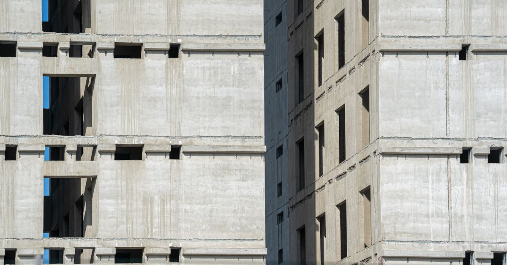

Deprem öncesi
İmar barışı ve Yapı Kayıt Belgesi: binanız yasallaştı ama güvenli olmadı
Yapı Kayıt Belgesi, binanın depreme dayanıklı olduğunu göstermez ve maliki sorumluluktan kurtarmaz. Sorumluluk açıkça malike bırakılmıştır.
· ~4 dakika okuma · T8 Hasar Tespiti · Claude Impact Lab

Milyonlarca binayı ilgilendiren ve büyük ölçüde yanlış bilinen bir konu: imar barışı. 2018'de getirilen düzenlemeyle, belirli bir tarihten önce yapılmış ruhsatsız veya ruhsata aykırı yapılar için Yapı Kayıt Belgesi alınabildi.
Belgeyi alan çok sayıda kişi şunu düşündü: "Binam artık yasal, sorun kalmadı." Bu cümlenin ilk yarısı kısmen doğru, ikinci yarısı ise tehlikeli biçimde yanlıştır.
Düzenleme ne getirdi?
3194 sayılı İmar Kanunu'na 2018'de eklenen geçici 16. madde ile, 31.12.2017'den önce yapılmış ruhsatsız veya ruhsata aykırı yapılar için başvuru imkânı tanınmış; süresinde başvurup bedelini ödeyenlere Yapı Kayıt Belgesi verilmiştir.
Belge, yapıya mevcut kullanımı bakımından bir hukuki statü tanır; abonelik ve bazı işlemlerde kolaylık sağlar.
Peki ne getirmedi?
Yapı Kayıt Belgesi, binanın depreme dayanıklı olduğunu göstermez ve maliki sorumluluktan kurtarmaz. Düzenleme, binanın depreme dayanıklılığı konusundaki sorumluluğu açıkça malike yüklemektedir. Belge, yapıyı imar mevzuatına uygun hâle getirmez; yalnızca mevcut kullanımına hukuki bir statü tanır.
Yani bir binanın kâğıt üzerindeki durumu ile fiziksel güvenliği farklı şeylerdir. Yapı Kayıt Belgesi birinciyi düzeltir, ikinciye dokunmaz.
Bu ayrım depremde ne anlama gelir?
- Sorumluluk sizde: Binanın depreme dayanıklılığından malik sorumludur. Belge, hasar veya can kaybı hâlinde koruma sağlamaz.
- Yapı mühendislik hizmeti görmemiş olabilir: Ruhsatsız yapıların bir kısmı proje ve mühendislik denetimi olmadan inşa edilmiştir.
- Sigorta tarafı ayrı bir konudur: Zorunlu deprem sigortası genel şartlarında, projesi bulunmayan ve mühendislik hizmeti görmemiş binaların kapsam dışı sayıldığı belirtilmektedir. Kapsam dışı binalar listesi.
Belge hangi hâlde geçerliliğini yitirir?
Basit tamir ve bakım sınırlarını aşan esaslı onarım yapılması hâlinde belgenin geçerliliğini yitirdiği belirtilmektedir. Bu, bina güçlendirme veya kapsamlı tadilat düşünen malikler için önemli bir ayrıntıdır; işleme başlamadan önce ilgili belediye ve il müdürlüğünden bilgi alın.
Yapı Kayıt Belgeniz varsa yapılacaklar
- Belgeyi bir kenara koyun, binayı ayrıca değerlendirin. Yasal statü ile yapısal güvenlik farklı konulardır.
- Risk tespiti yaptırın. Tek malik olarak da başvurabilirsiniz; diğer maliklerin onayı gerekmez — nasıl yapılır.
- Binanın yapım yılını ve yönetmelik dönemini öğrenin. Yönetmelik kuşakları ve belge temini.
- Sigorta durumunuzu kontrol edin. Poliçenizdeki bilgiler binanın gerçek durumunu yansıtıyor mu?
- Tadilat planlıyorsanız önce sorun. Esaslı onarım, belgenin geçerliliğini etkileyebilir.
Satın alırken ve kiralarken
Bir konut satın alıyor veya kiralıyorsanız, "Yapı Kayıt Belgesi var" cümlesini güvenlik güvencesi olarak okumayın. Sorulacak doğru sorular şunlardır:
- Binanın yapı ruhsatı ve yapı kullanma izin belgesi (iskân) var mı?
- Zemin etüdü raporu mevcut mu?
- Bina hangi yılda ve hangi deprem yönetmeliği döneminde yapıldı?
- Taşıyıcı sistemde tadilat yapılmış mı?
- Daha önce risk tespiti yaptırılmış mı; sonucu ne?
Bu belgeler bilgi edinme başvurusuyla ilgili idarelerden istenebilir; depremden sonra bunlara ulaşmak çok daha zorlaşır. Belgeler nasıl istenir?
Kiracılar için: Kiraladığınız binanın belgelerini istemek hakkınızdır. Sözleşmeye, binanın yapım yılı ve belgelerinin beyan edildiği bir ek koymak, taraflar anlaşırsa mümkündür. Kiracının hakları.
Özet: belge ne yapar, ne yapmaz?
| Yapar | Yapmaz |
|---|---|
| Yapının mevcut kullanımına geçici bir hukuki statü tanır | Binanın depreme dayanıklı olduğunu göstermez |
| Bazı işlemlerde kolaylık sağlar | Maliki depreme dayanıklılık sorumluluğundan kurtarmaz |
| Ruhsatsız/ruhsata aykırı yapı için başvuru imkânı sunmuştu | Yapıyı imar mevzuatına uygun hâle getirmez |
| — | Yapının mühendislik hizmeti gördüğü anlamına gelmez |
Ruhsatsız yapı, deprem sonrasında ne oluyor?
Ruhsatsız veya ruhsata aykırı yapılar, deprem sonrasında birden çok başlıkta dezavantajlı hâle gelebilir:
- Sigorta: Projesi bulunmayan ve mühendislik hizmeti görmemiş binaların zorunlu deprem sigortası genel şartları bakımından kapsam dışı sayıldığı belirtilmektedir.
- Sorumluluk: Ruhsatsız veya ruhsata aykırı yapı bakımından ceza hukuku boyutu da gündeme gelebilir.
- Devlet desteği: Hak sahipliği ve destek süreçleri belgeye ve kayda dayalı yürür.
Bu nedenle "belgem var, konu kapandı" yaklaşımı yerine, binanın gerçek durumunu öğrenmek daha güvenli bir yoldur: riskli yapı tespiti nasıl yaptırılır.
Tek cümlelik özet
İmar barışı bir kayıt düzenlemesidir, bir güvenlik belgesi değildir. Kâğıt üzerindeki durumu düzeltir; betonun içindekini değiştirmez. Binanızın depreme dayanıklı olup olmadığını yalnızca teknik bir inceleme söyleyebilir ve bu incelemeyi yaptırma hakkı — diğer maliklerin onayı olmadan — sizde vardır.
Deprem öncesinde yapılabilecek diğer iki şey: binanızın hangi yönetmelik döneminde yapıldığını öğrenmek ve sigorta korumanızın gerçek sınırını hesaplamak.
Sık sorulan sorular
Yapı Kayıt Belgesi binanın depreme dayanıklı olduğunu gösterir mi?
Hayır. Yapı Kayıt Belgesi, binanın depreme dayanıklı olduğunu göstermez ve maliki sorumluluktan kurtarmaz; düzenleme depreme dayanıklılık konusundaki sorumluluğu açıkça malike yüklemektedir.
İmar barışı hangi yapıları kapsıyordu?
31.12.2017'den önce yapılmış ruhsatsız veya ruhsata aykırı yapılar için başvuru imkânı getirilmiş; belirlenen süre içinde başvurup bedelini ödeyenlere Yapı Kayıt Belgesi verilmiştir.
Belge hangi hâllerde geçerliliğini yitirir?
Basit tamir ve bakım sınırlarını aşan esaslı onarım yapılması hâlinde belgenin geçerliliğini yitirdiği belirtilmektedir.
Yapı Kayıt Belgesi olan bina için risk tespiti yaptırılabilir mi?
Evet. Riskli yapı tespiti, malik veya kanuni temsilcisi tarafından masrafı kendisine ait olmak üzere lisanslı kuruluşlara yaptırılabilir; belgenin varlığı buna engel değildir.
Hangi kanuna dayanıyor?
Bu yazıdaki bilgilerin dayandığı düzenlemeler:
- 3194 sayılı İmar Kanunu geçici m.16 — Yapı Kayıt Belgesi
- 7143 sayılı Kanun m.16 — geçici 16. maddenin eklenmesi
- 6306 sayılı Kanun m.3 — riskli yapı tespiti
- Haklarım — malik olarak haklarınızı ve yükümlülüklerinizi görün
- Sigorta açığı hesabı — sigorta korumanızın sınırlarını hesaplayın